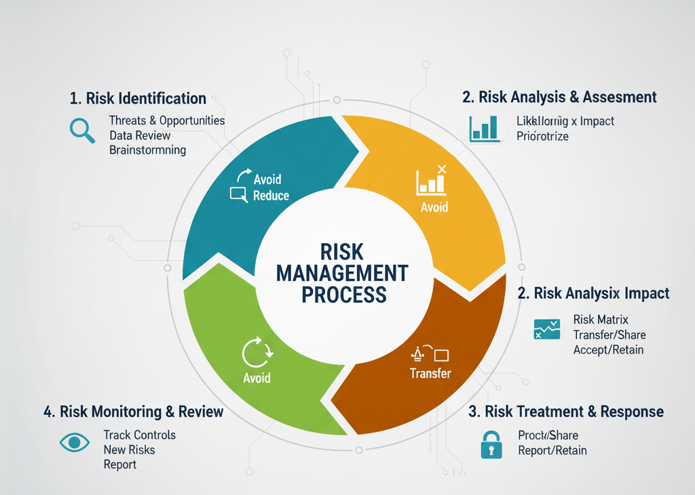

Lesson 2: Understanding the Risk Management Process

Information Security Risk
Information security risk refers to the potential adverse impacts that result from unauthorized access, use, disclosure, disruption, modification, or destruction of information or systems.
Risk Management Terminology
- Asset: Anything of value that needs protection.
- Vulnerability: A weakness that can be exploited.
- Threat: Something or someone that exploits a vulnerability.
Example:
If a pickpocket targets tourists, the existence of pickpockets is a threat, the pickpocket is the threat actor, and the act of stealing is the threat vector.
Threat Actors
- Insiders: Employees who may cause harm intentionally or accidentally.
- External Groups: Hackers or opportunists.
- Non-Political Entities: Cybercriminals or competitors.
- Political Entities: Nation-states, terrorists, or hacktivists.
- Information Gatherers: Actors seeking sensitive data.
- Technology: Automated tools, bots, or AI used in cyberattacks.
Vulnerabilities
A vulnerability is a flaw in a system or component that, if exploited, could cause a risk event.
Risk Assessment
Risk assessment identifies, estimates, and prioritizes risks to operations, assets, and individuals.
Risk Treatment
Risk treatment involves deciding how to respond to identified and prioritized risks. The approach depends on management’s attitude toward risk, resource availability, and mitigation cost.
Main Risk Treatment Options:
- Avoidance: Eliminating the risk entirely by removing the cause or activity.
- Acceptance: Choosing to take no action and tolerating the risk.
- Mitigation: Reducing the likelihood or impact of the risk through proactive measures.
- Transference: Shifting the risk to another party (e.g., through insurance or outsourcing).